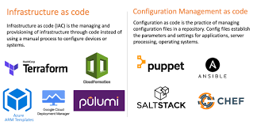
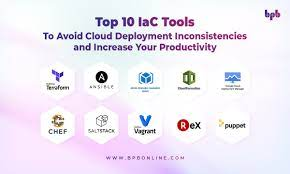
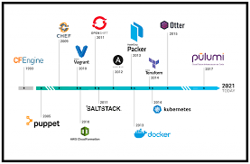

Infrastructure as Code (IaC) Tools for Cloud Service Providers (CSPs)
AWS
Amazon Web Services (AWS) provides a variety of IaC tools, including:
- AWS CloudFormation: A native AWS service for defining and deploying infrastructure as code.
- Terraform: A popular third-party tool that supports AWS and other cloud providers.
Google Cloud Platform (GCP)
Google Cloud Platform offers the following IaC tools:
- Google Cloud Deployment Manager: GCP's native IaC service for defining and deploying resources.
- Terraform: Also works seamlessly with GCP, providing multi-cloud support.
Microsoft Azure
Microsoft Azure provides its IaC solutions:
- Azure Resource Manager (ARM) Templates: The native IaC tool for defining Azure infrastructure.
- Terraform: Widely used for managing Azure resources alongside other cloud providers.
IaC Tools for Multi-Cloud Environments
Managing infrastructure across multiple cloud providers requires tools that support diverse environments. Some popular multi-cloud IaC tools include:
- Terraform: Highly versatile and widely adopted for provisioning resources in various CSPs.
- HashiCorp Consul: Provides service discovery and configuration management for multi-cloud setups.
- Ansible: Supports multi-cloud configurations through its extensive library of modules.
These IaC tools empower organizations to manage their infrastructure efficiently, whether they are using a single CSP or a multi-cloud strategy.


